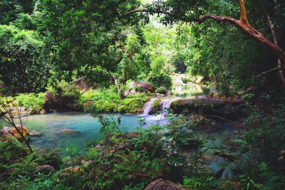
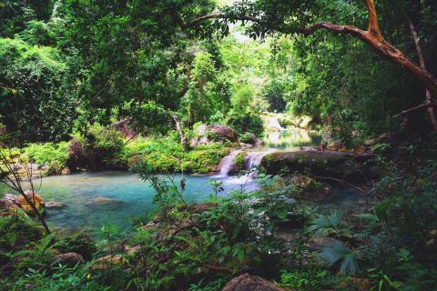

Montes de Oca, sin duda, es ese realismo mágico que supera cualquier ficción.


Caminar por los senderos de los Montes de Oca es como adentrarse en un cuento de Gabriel García Márquez. Allí, en ese pequeño rincón de La Guajira, a diferencia de las obras de Gabo, el olor a monte purifica los pulmones y sus aguas refrescan al caminante.
Luego de vislumbrar los paisajes y la diversidad de la flora que se encuentra en el camino de llegada a Montes de Oca, está la entrada del lugar. Como si de Macondo se tratase, cientos de mariposas la adornan. La mayoría son denominadas “Morfo Azul” una especie de lepidóptero ditrisio nativa de Centro y Suramérica. Una belleza local que solo en ciertos lugares del continente se encuentra.
Trece cascadas de un característico color azul nacen al interior de la reserva que se alimenta del Río Jordan y que en 2007 se convirtió en la primera área natural protegida por Corpoguajira. Este paraíso nacional que se encuentra cerca de la frontera con Venezuela, es el lugar ideal para realizar caminatas y exploraciones que permitan la observación de flora y fauna silvestre y disfrutar de su clima tropical, que pasa de húmedo a seco.
En los Montes de Oca se encuentran también mantos de calizas de gran atractivo y rocas de distintos origines y edades. Entre las piedras se pueden encontrar las jurásicas, cretáceas, terciarias y cuaternarias, entre otras, que con su belleza aportan a los diversos paisajes del lugar.


De manera recelosa el extremo norte de la Serranía del Perijá esconde este paraíso que hoy es reserva forestal y salvaguarda su fauna y flora con por lo menos 14.400 hectáreas de bosque seco.
La Corporación Autónoma Regional de La Guajira (Corpoguajira) describe que en este templo natural habitan cerca de 200 tipos de plantas, 67 mamíferos —que corresponde al 15% del total nacional—; 45 anfibios y reptiles — que es el 62,5% que habita en la región Caribe—; y 177 especies de aves —que atañen al 25% del total conocido en nuestra región— .
“Montes de Oca por ser una reserva natural protegida, tiene usos permitidos y ciertas restricciones a tener en cuenta. En muchas de las cascadas del lugar su uso es solo para contemplación, investigación, fotografía y conocimiento del paisaje”, advierte Manjarrez.
Ubicada en el extremo norte de la Serranía del Perijá, esta reserva natural alberga alrededor de 200 especies de plantas, 67 mamíferos, 45 anfibios y 177 clases de aves.
© 2019 por Irma Lorena Vélez Pérez ©